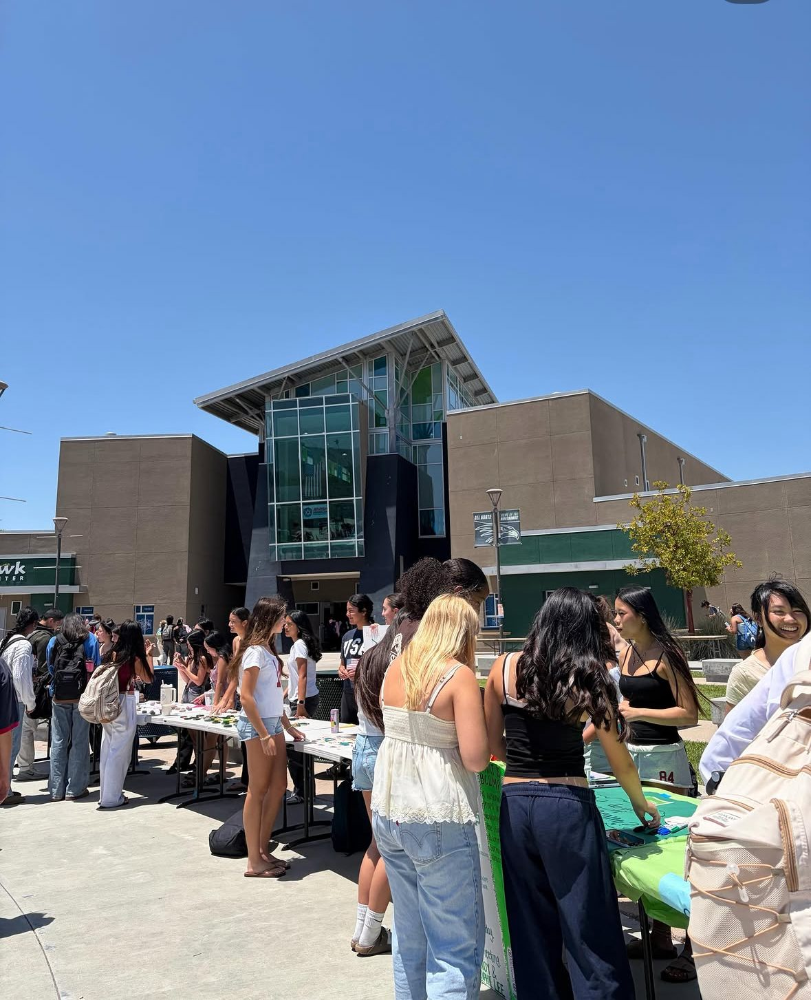
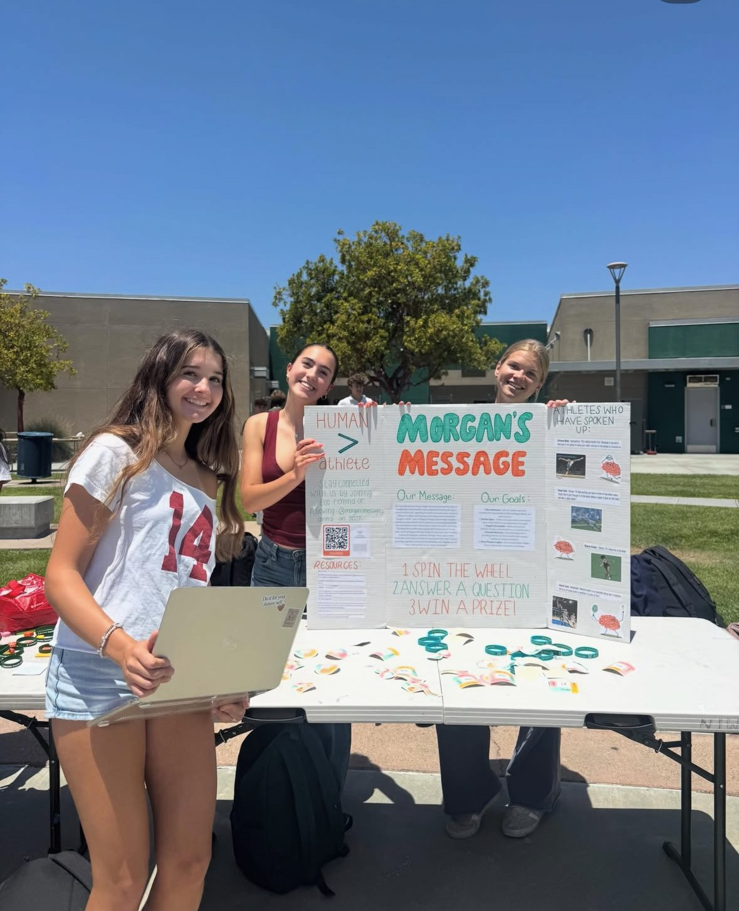
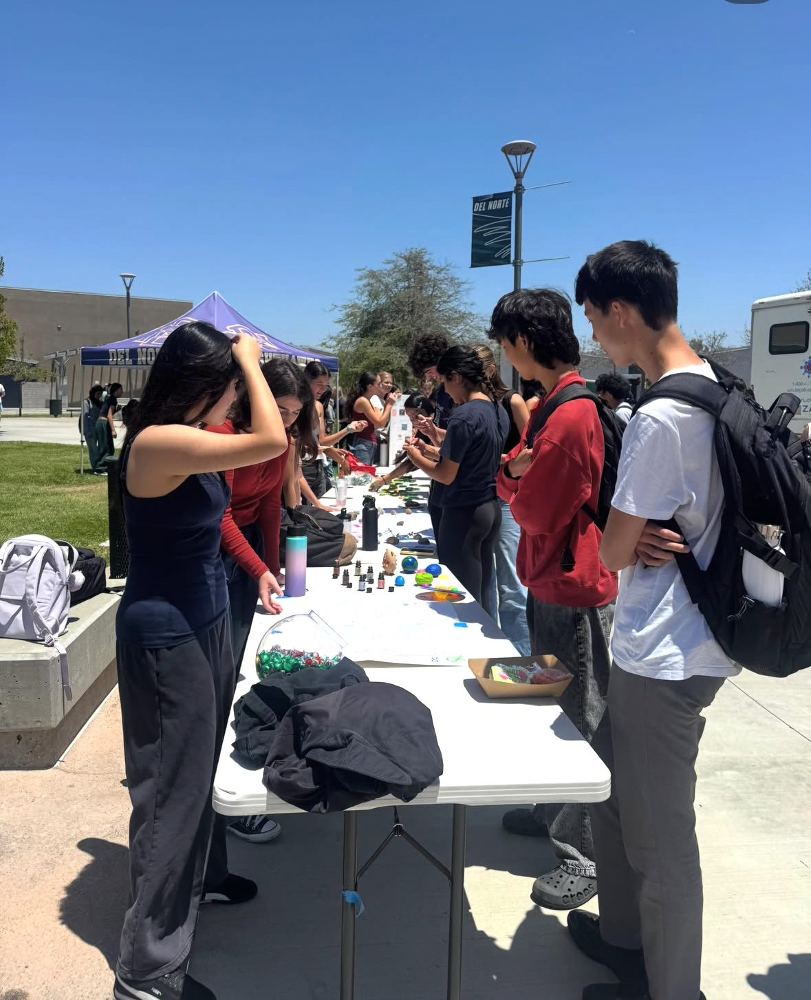
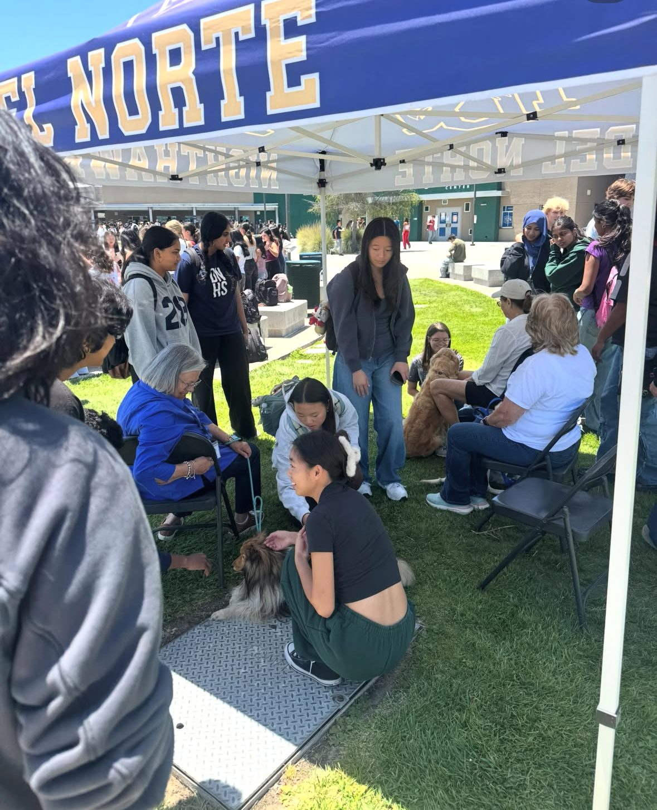

Chapter Spotlight
Morgan's Message DNHS Chapter
A youth-led student-athlete mental health chapter at Del Norte High School.
Student-Led Support
Open conversations for student-athletes.
The Morgan's Message DNHS Chapter supports student-athlete mental health by creating space for students to talk openly about pressure, identity, confidence, and emotional wellbeing.
Broad Shoulders Executive Leadership includes Morgan's Message student ambassadors connected to this DNHS chapter. The collaboration centers on shared mission, student-led advocacy, and helping athletes find resources without implying a formal legal partnership.
Together, the chapter and Broad Shoulders keep the conversation close to students: reflective stories, peer leadership, and practical mental health resources all reinforcing that athletes are people first.
Visit DNHS Morgan's Message Instagram →Event Spotlight
Mental Wellness Fair
May 21, 2026
The Mental Wellness Fair brought together student wellness groups and mental health-focused clubs at Del Norte High School to share resources, coping strategies, wellness tips, and community support.
Hosted by Bring Change 2 Mind and featuring Morgan's Message, CARE Club, LIFE Advisory, Psychology Club, Peer Counseling, and Love on a Leash, the fair invited students to learn about clubs, explore coping strategies, pick up wellness tips, win candy and stickers, and spend time with therapy dogs.
The Morgan's Message DNHS chapter shared student-athlete mental health resources and helped create a welcoming space where students could engage with mental wellness in an approachable, community-centered way.
Photo Gallery
Scenes from the fair.




